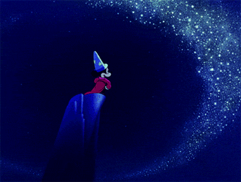

The Golden Age
The Peak of Classical Animation
- During this time, America produced some of the finest animation ever made, not just in terms of quantity, but in quality.
- Primarily theatrical shorts, but also features
- Would end with the advent of television
- Peak of innovative character animation
Disney's Move to the New Studio
Nine Old Man
Pinocchio - 1940

Pinocchio is considered one of Disney's most classic and beautifully made films.
Pinocchio - 1940
Huge loss at the box office due to beginning of WWII in Europe
Considered one of the best examples of the "Golden Age" of Disney animation
Fantasia - 1940
Fantasia was a completely different type of film than anything Disney had tried before, but it couldn't find an audience
Bambi - 1942
Bambi features the stunning nature-inspired artwork of artist Tyrus Wong.
Dumbo - 1941
With the exception of Dumbo (1941), all of these films lost more money than they made due to increased production costs and new studio, the outbreak of World War 2 , and an Animator's Strike in 1941.
Animator's Strike of 1941

Tyrus Wong
Disney was in trouble...
- Outbreak of World War II in Europe
- Increased production costs and new studio
- Animator's Strike in 1941
Termite Terrace and Tex Avery

1934 Fred "Tex" Avery is hired and sent to direct a misfit crew of artists and animators over on a remote studio lot in a tiny wood building they dub "Termite Terrace" Avery heads up a team of animators and artists including Bobe Cannon, Bob Clampett, and Charles "Chuck" Jones.
Shift in defining a new style for WB
- "Gold Diggers" is a bridge between the old Warner Brother cartoons and the new
- Cartoons started becoming funny, -not just cute!!
- Starting to slowly introduce the breakneck speed that would be a defining WB style